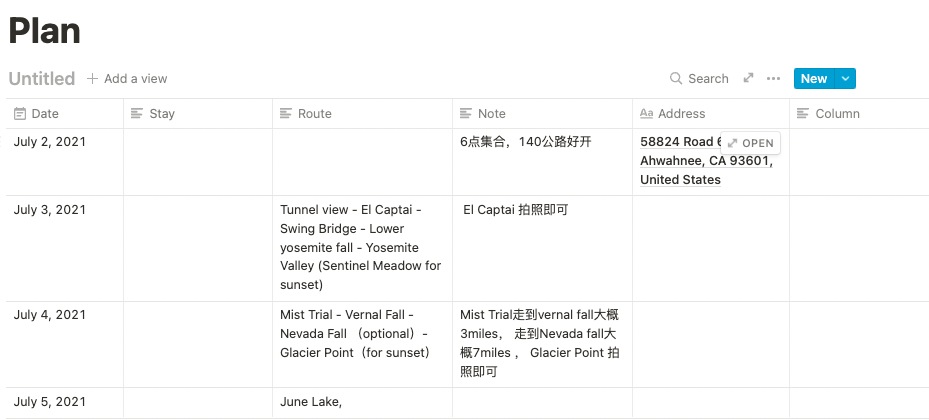
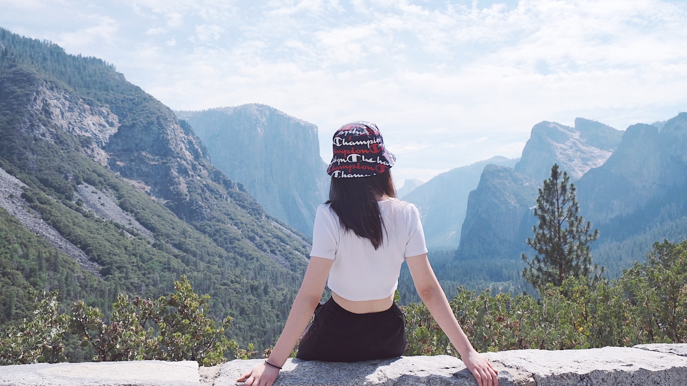
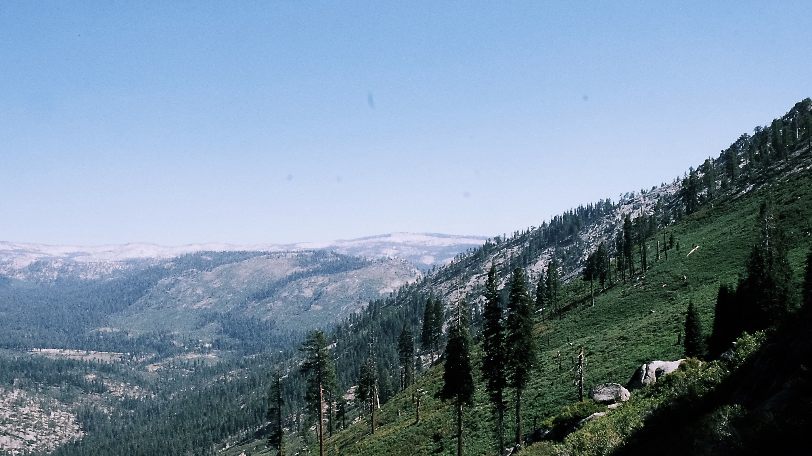
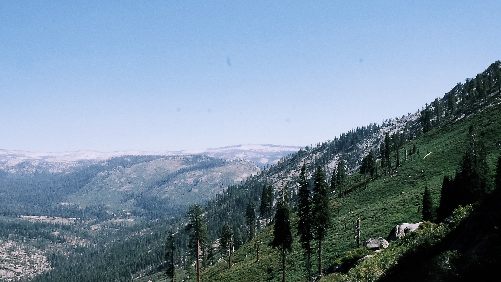

Time: 2021 July birthday Duration:4 days
Yosemite National Park
Yosemite National Park is in California’s Sierra Nevada mountains. It’s famed for its giant, ancient sequoia trees, and for Tunnel View, the iconic vista of towering Bridalveil Fall and the granite cliffs of El Capitan and Half Dome. In Yosemite Village are shops, restaurants, lodging, the Yosemite Museum and the Ansel Adams Gallery, with prints of the photographer’s renowned black-and-white landscapes of the area.

Outside the valley, Glacier Road and Tioga Road provide seasonal access to other areas of the park. Glacier Road allows access to stunning views over the Yosemite Valley. Tioga Road crosses the park in an east-west direction and runs through alpine scenery, where you can find lovely, and often less busy, hiking trails. Due to the altitude, Tioga Road opens later in the spring than Glacier Road.

 
